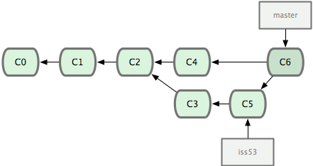
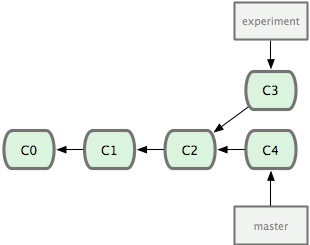
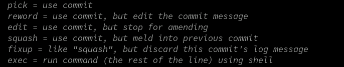

历史
历史
Git 简史
Git 简史
同生活中的许多伟大事件一样，Git 诞生于一个极富纷争大举创新的年代。 Linux 内核开源项目有着为数众广的参与者。绝大多数的 Linux 内核维护工作都花在了提交补丁和保存归档的繁琐事务上（1991－2002年间）。到 2002 年，整个项目组开始启用分布式版本控制系统 BitKeeper 来管理和维护代码。
到了 2005 年，开发 BitKeeper 的商业公司同 Linux 内核开源社区的合作关系结束，他们收回了免费使用 BitKeeper 的权力。这就迫使 Linux 开源社区（特别是 Linux 的缔造者 Linus Torvalds ）不得不吸取教训，只有开发一套属于自己的版本控制系统才不至于重蹈覆辙。他们对新的系统制订了若干目标：
- 速度
- 简单的设计
- 对非线性开发模式的强力支持（允许上千个并行开发的分支）
- 完全分布式
- 有能力高效管理类似 Linux 内核一样的超大规模项目（速度和数据量）
自诞生于 2005 年以来，Git 日臻成熟完善，在高度易用的同时，仍然保留着初期设定的目标。它的速度飞快，极其适合管理大项目，它还有着令人难以置信的非线性分支管理系统（见第三章），可以应付各种复杂的项目开发需求。
起步
起步
基础
基础
- 直接记录快照，而非差异比较
- 近乎所有操作都是本地执行
- 时刻保持数据完整性
- 多数操作仅添加数据
- 文件的三种状态
快照
快照
大多数其他系统则只关心文件内容的具体差异。

快照
快照
Git 更像是把变化的文件作快照后，记录在一个微型的文件系统中。每次提交更新时，它会纵览一遍所有文件的指纹信息并对文件作一快照，然后保存一个指向这次快照的索引。

文件状态
文件状态
在 Git 内都只有三种状态：已提交（committed），已修改（modified）和已暂存（staged）。已提交表示该文件已经被安全地保存在本地数据库中了；已修改表示修改了某个文件，但还没有提交保存；已暂存表示把已修改的文件放在下次提交时要保存的清单中。
由此我们看到 Git 管理项目时，文件流转的三个工作区域：Git 的工作目录，暂存区域，以及本地仓库。

配置
配置
Git 会找寻用户主目录下的 .gitconfig 文件
[user]
email = gunbanmi@gmail.com
name = cdadar
[push]
default = simple
[alias]
lg = log
--color --graph
--pretty=format:'%Cred%h%Creset -%C(yellow)%d%Creset %s %Cgreen(%cr) %C(bold blue)<%an>%Creset'
--abbrev-commit
co = checkout
br = branch
ca = commit -a
s = status
caa = commit -a --amend
[core]
autocrlf = input
[merge]
tool = vimdiff
conflictstyle = diff3
[diff]
tool = vimdiff
[difftool]
prompt = false
配置
配置
用户信息
$ git config --global user.name "John Doe" $ git config --global user.email johndoe@example.com
如果用了 --global 选项，那么更改的配置文件就是位于你用户主目录下的那个，以后你所有的项目都会默认使用这里配置的用户信息。如果要在某个特定的项目中使用其他名字或者电邮，只要去掉 --global 选项重新配置即可，新的设定保存在当前项目的 .git/config 文件里。
获取帮助
获取帮助
想了解 Git 的各式工具该怎么用，可以阅读它们的使用帮助，方法有三：
$ git help <verb> $ git <verb> --help $ man git-<verb>
比如，要学习 config 命令可以怎么用，运行：
$ git help config
命令
命令
取得项目的 Git 仓库
取得项目的 Git 仓库
在工作目录中初始化新仓库
$ git init
$ git add *.c $ git add README $ git commit -m 'initial project version'
从现有仓库克隆
$ git clone git://github.com/schacon/grit.git
记录每次更新到仓库
记录每次更新到仓库
工作目录下面的所有文件都不外乎这两种状态：已跟踪或未跟踪。已跟踪的文件是指本来就被纳入版本控制管理的文件，在上次快照中有它们的记录，工作一段时间后，它们的状态可能是未更新，已修改或者已放入暂存区。而所有其他文件都属于未跟踪文件。它们既没有上次更新时的快照，也不在当前的暂存区域。初次克隆某个仓库时，工作目录中的所有文件都属于已跟踪文件，且状态为未修改。
在编辑过某些文件之后，Git 将这些文件标为已修改。我们逐步把这些修改过的文件放到暂存区域，直到最后一次性提交所有这些暂存起来的文件，如此重复。所以使用 Git 时的文件状态变化周期如图所示。

命令
命令
要确定哪些文件当前处于什么状态，可以用 git status 命令.
使用命令 git add 开始跟踪一个新文件。
可以创建一个名为 .gitignore 的文件，列出要忽略的文件模式。
- 所有空行或者以注释符号 ＃ 开头的行都会被 Git 忽略。
- 可以使用标准的 glob 模式匹配。
- 匹配模式最后跟反斜杠（/）说明要忽略的是目录。
- 要忽略指定模式以外的文件或目录，可以在模式前加上惊叹号（!）取反。
要查看尚未暂存的文件更新了哪些部分，不加参数直接输入 git diff
提交命令 git commit
git rm 记录此次移除文件的操作
我们想把文件从 Git 仓库中删除（亦即从暂存区域移除），但仍然希望保留在当前工作目录中。换句话说，仅是从跟踪清单中删除。比如一些大型日志文件或者一堆 .a 编译文件，不小心纳入仓库后，要移除跟踪但不删除文件，以便稍后在 .gitignore 文件中补上，用 --cached 选项即可
$ git rm --cached readme.txt
命令
命令
查看提交历史
$ git log
修改最后一次提交有时候我们提交完了才发现漏掉了几个文件没有加，或者提交信息写错了。想要撤消刚才的提交操作，可以使用 --amend 选项重新提交：
取消已经暂存的文件
$ git reset HEAD <file>
返回上一个提交
$ git reset --hard HEAD^1
取消对文件的修改
$ git checkout -- benchmarks.rb
远程仓库的使用
远程仓库的使用
要查看当前配置有哪些远程仓库，可以用 git remote 命令，它会列出每个远程库的简短名字。在克隆完某个项目后，至少可以看到一个名为 origin 的远程库， Git 默认使用这个名字来标识你所克隆的原始仓库
从远程仓库抓取数据
$ git fetch [remote-name]
推送数据到远程仓库
$ git push origin master
打标签
打标签
列显已有的标签
$ git tag
新建标签
$ git tag -a v1.4 -m 'my version 1.4'
何谓分支
何谓分支

创建分支
$ git branch testing $ git checkout -b testing
要切换到其他分支，可以执行 git checkout 命令
删除分支
$ git branch -d hotfix
合并分支
合并分支
用 git merge 命令来进行合并

解决冲突
解决冲突
<<<<<<< HEAD <div id="footer">contact : email.support@github.com</div> ======= <div id="footer"> please contact us at support@github.com </div> >>>>>>> iss53
分支的变基
分支的变基
git rebase -i master

分支的变基
分支的变基

分支的变基
分支的变基

分支的变基
分支的变基

Thank You ˊ・ω・ˋ